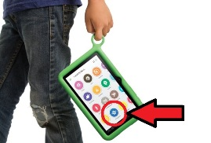

Programmieren am Handy nach dem Legoprinzip!
26 November 2014
Newspaper article on Catrobat (in German language)!
VISIT
Create an Android game in less than one hour!
11 October 2014
Pocket Code is featured during the European Code Week!
VISIT

Take a crash course in fun!
4 September 2014
Pocket Code featured by Google in back-to-school promotion!
VISIT

Invited talk about Pocket Code
22 August 2014
Forthcoming features presented at the Constructionism conference
VISIT

Scratch team visits Catrobat HQ to start collaboration
18 August 2014
Mitch Resnick gave a talk on Sowing the seeds for a more creative society
VISIT
First Android App creation contest with Pocket Code
7 July 2014
The winning app will be converted into an Android app on Google Play!
VISIT
Worldwide the first app on Google Play created entirely on a smartphone
8 May 2014
Tic-Tac-Toe Master was downloaded 23,000 times from Google Play so far!
VISIT

Pocket Code and Pocket Paint on Google Play for Education
9 March 2014
Video of our apps used in schools for STEM education!
VISIT
New versions of our Apps on Google Play
8 March 2014
Pocket Code and Pocket Paint are out of the beta and freely available on Google Play!
VISIT
Google Summer of Code 2014
24 February 2014
Google selected us for the fourth time as a Google Summer of Code mentoring organization!
VISIT

Catrobat at the Computer Science Education Week
9 December 2013
Pocket Code is participating at the Computer Science Education Week!
VISIT
Catrobat is participating at the European Code Week
29 November 2013
Pocket Code is demonstrated at the European Code Week and Robotics Day!
VISIT

Google is promoting Pocket Code
14 November 2013
Google is promoting Pocket Code heavily during the launch of Google Play for Education!
VISIT
Live AR.Drone programming at Scratch'2013
25 July 2013
Pocket Code presentation at Scratch'2013, including a live demo of programming a Parrot AR.Drone!
VISIT

Our Apps on the OLPC Tablet
17 July 2013
The preliminary physics version of Pocket Code is the programming app on the new OLPC Tablet!
VISIT
National Innovation Award
7 March 2013
We were awarded the Austrian National Innovation Award 2013 in the category Multimedia by the Austrian Minister for Economics and Youth Development!
VISIT